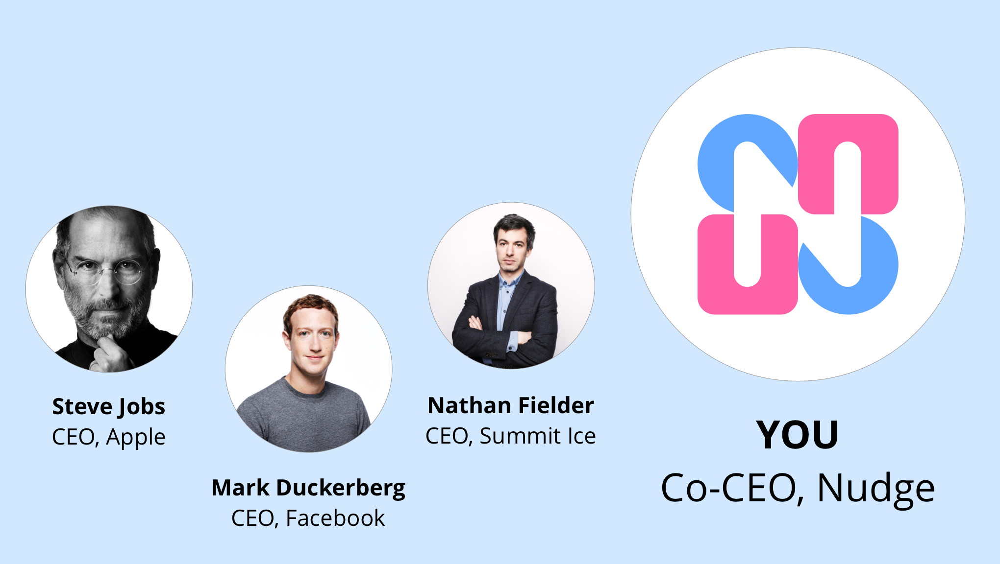
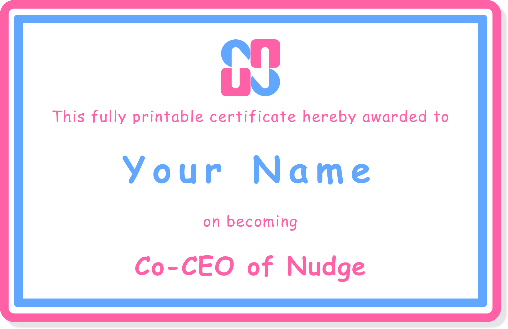
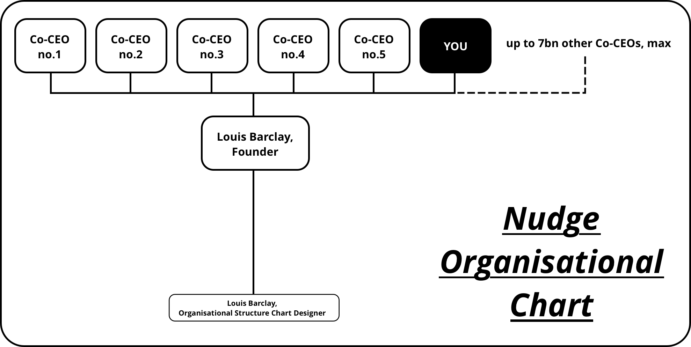

A startup is only as good as its CEO.
That's why I'm allowing literally anyone to become Co-CEO of Nudge, with no hiring process or quality control at all.
All you have to do to transform yourself into a high-flying startup CEO is share Nudge with 10 people or pay $3 a month.
You're probably sold already. But if you still need convincing:
Here’s the fully printable certificate that you'll be able to use once you become Co-CEO*:
The certificate is fully printable
*Unfortunately, due to complex technical limitations, it is not possible to change ‘Your Name’ to your name.
Here’s the organisational structure of Nudge, showing how you’ll fit in once you’ve paid:
Technically you’ll be senior to me (which means nothing in reality)
Act fast because once we hit maximum capacity of 7 billion Co-CEOs, I will no longer be able to accept applications.
See you in the boardroom!
Louis Barclay
Founder of Nudge
louis@nudgeware.io